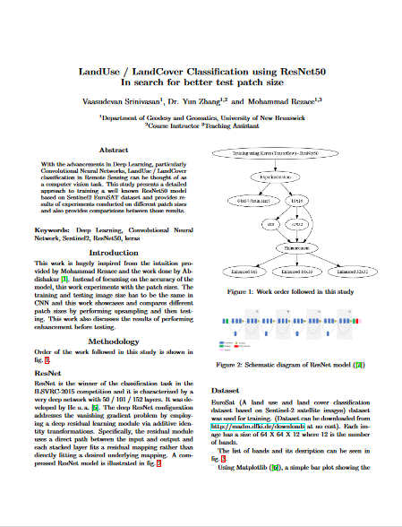
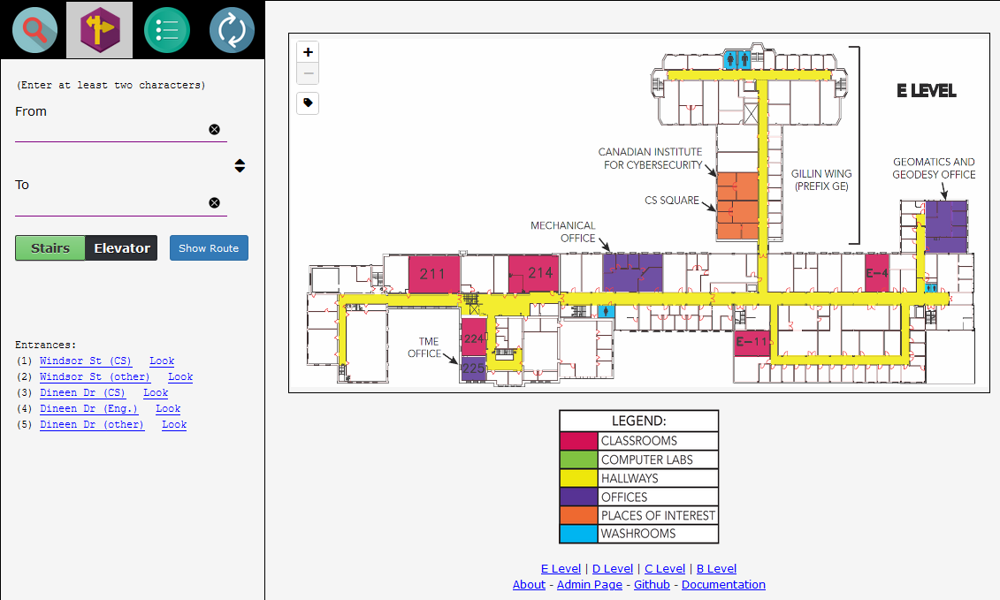
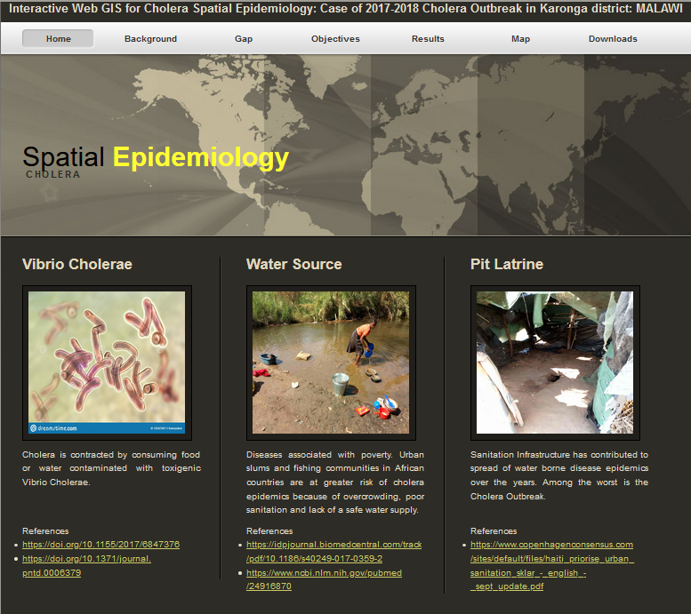
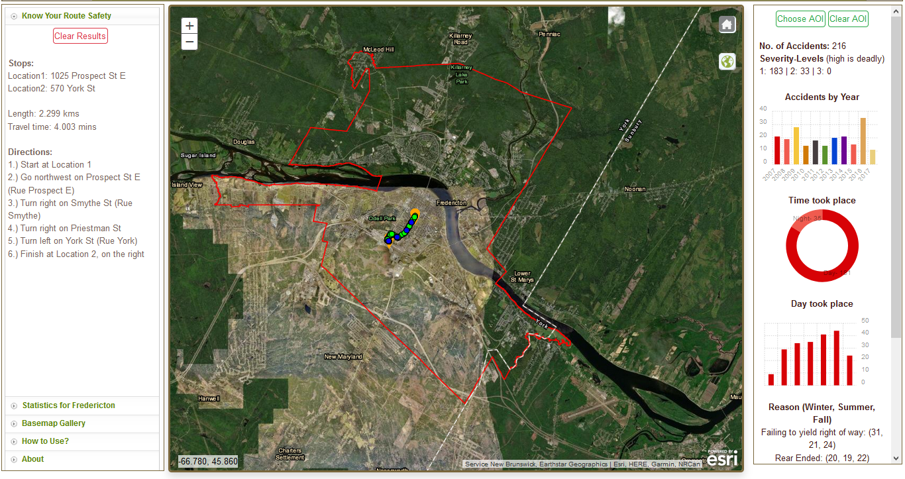
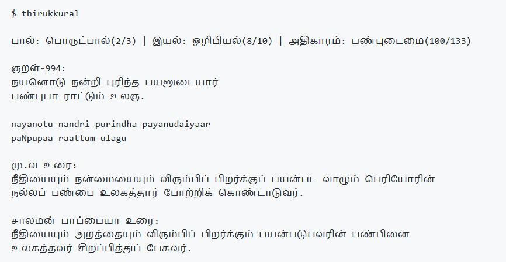

| Graduate Student Teaching Assistant for the course GGE3342: Remote Sensing | FALL 2019 TERM |
Prepared the lab materials with the step-by-step screenshots from the Geomatica software; conducted in-person weekly labs to provide support
to the class of 30 for performing lab tasks and assignments; evaluated and handed out assignment reports
| Cooperative Education work placement at NB Power | MAY to AUG 2019 |

Generated network dataset which is to be used for performing network analysis by integrating New Brunswick road layers from multiple sources using ArcGIS Desktop; developed arcpy scripts to perform quality control and quality check of network dataset’s connectedness.
Developed an ArcPy workflow to update the attribute table and to merge all the features based on spatial relationships of multiple layers.
Presenting the report of the obtained results after performing appropriate analysis and submitting the daily status report to the manager.
Showcased the ability of being more flexible, regularly following the tight deadlines, organizing and prioritizing the allocated tasks.
| Term-Paper: Land Use Land Cover | FALL 2019 TERM |

Trained a ResNet50 model using EuroSAT dataset and wrote a term paper experimenting various test patch sizes for the model
| Project: Indoor Routing Web App | FALL 2019 TERM |

Developed a web app for navigating between the multi-floor rooms for the Head Hall building in the UNB campus using django, geopandas and networkx
| Project: Cholera Spatial Epidemiology | FALL 2019 TERM |

Developed a webpage from a template to display the results / work done by my UNB colleague Maxwell Kamba
| Project: Fredericton-KnowYourRoute | APR 2019 |

Selected by the UNB-GGE Committee for 2019 ESRI Canada GIS Scholarship for this work.
Project Description: Web Application that shows the commute route for the user selected points and displays accident statistics (year wise and time of the day wise) for the Fredericton city using ESRI JS API.
Scholarship package: 2000CAD$, three-year license for ArcGIS Pro and extensions, Geo-planner, three ESRI Press books, two complimentary Instructor-led ESRI courses
Project Description: Web Application that shows the commute route for the user selected points and displays accident statistics (year wise and time of the day wise) for the Fredericton city using ESRI JS API.
Scholarship package: 2000CAD$, three-year license for ArcGIS Pro and extensions, Geo-planner, three ESRI Press books, two complimentary Instructor-led ESRI courses
|
Command Line tool / Python-Module: thirukkural |
APR 2019 |

Python module / CL tool for the world famous tamil literary work "thirukkural".
Available in Tamil, English and trans-literated English (from Tamil), display a random verse, displaying all the verses in a given chapter.